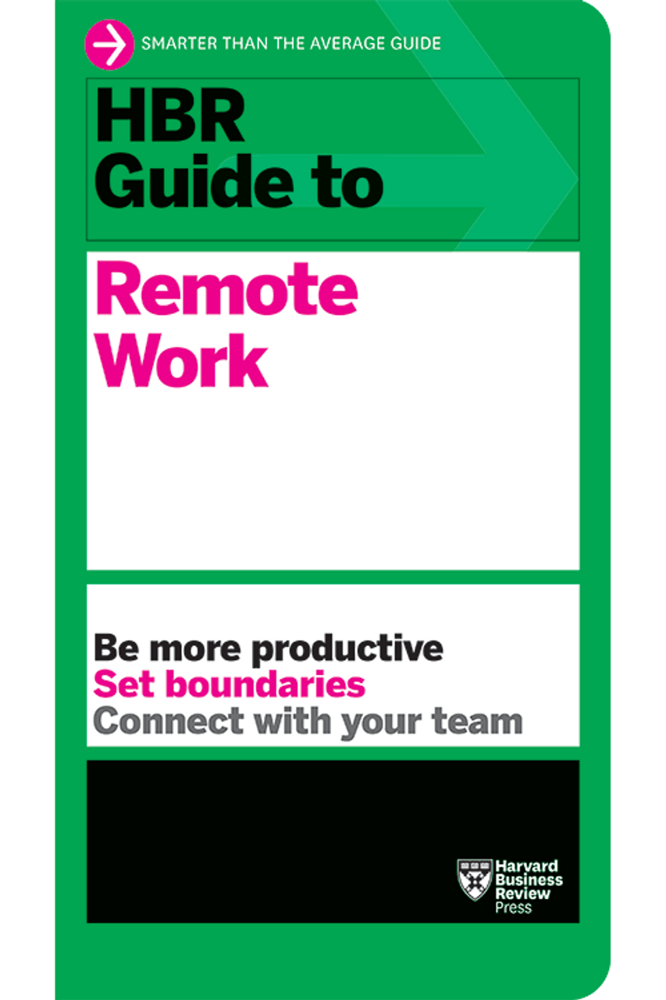

About the Hub
We are dedicated to advancing SDG 8 by equipping people with digital literacy skills for remote work, driving inclusive economic growth.
Impact Stories
Story 1: From Novice to Remote Developer
Maria, a single mother from a rural area, learned coding through online courses. She now works remotely as a web developer, increasing her income by 50% and contributing to her community's economy.
Story 2: Empowering Freelancers
John transitioned from traditional jobs to freelance graphic design after gaining digital tools proficiency. His story highlights how digital literacy opens doors to flexible, high-paying remote opportunities.

Blog Teaser
Latest Post: "The Rise of Remote Work in 2025" - Explore how digital skills are reshaping economies. Read more in our full blog (link to external or expand here).
Resources Library
Access guides and research:
